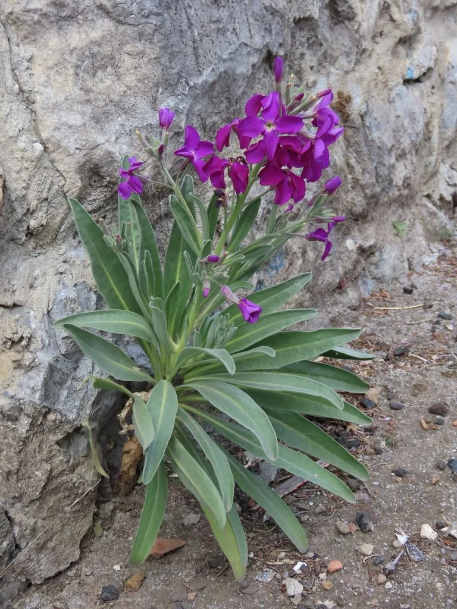

花卉与草本 · 植物界
紫罗兰 Matthiola incana

十字花科二年生草本，穗状花序紫红或白色、香气浓郁，是春季节日花束与花坛的常用花卉，原产地中海沿岸。
- 分类
- 门被子植物门纲木兰纲目十字花目科十字花科属紫罗兰属
- 栖息环境
- 地中海沿岸的岩石坡地与干燥草地，喜凉爽、阳光充足
- 地理分布
- 原产地中海沿岸，现世界各地栽培，中国各地花坛与花市常见
- 保护级别
- 暂无评估
物种志
紫罗兰为十字花科紫罗兰属二年生至多年生草本，株高 30–60 厘米，茎直立，全株被灰白色柔毛。叶片长椭圆形至披针形，灰绿色。总状花序顶生，花有紫红、粉、白、淡黄等色，单瓣或重瓣，具浓郁香气，花期 3–5 月；果实为长角果。
紫罗兰原产地中海沿岸，喜凉爽、阳光充足和排水良好的环境，耐寒不耐酷热，秋播后翌年春天开花。它花序挺直、花色柔和、香气清雅，是花束、花坛和盆栽的常见材料，重瓣品种尤其受欢迎。注意与苦苣苔科的非洲堇区分，二者亲缘关系很远；紫罗兰的花可作食用装饰，但需确认未施农药；重瓣品种在花市上尤其受欢迎，适合做胸花。
形态与习性
- 株高30–60 厘米，全株被柔毛
- 花期3–5 月，香气浓郁
- 果期花后结长角果
- 光照喜充足阳光
- 水分喜湿润，忌积水
- 土壤疏松、排水良好的石灰质壤土
- 主要用途花束、花坛、盆栽
趣味知识
- 紫罗兰的穗状花序香气浓郁，是欧洲传统花束的常用花材。
- 它与苦苣苔科的非洲堇并非近亲，只是名称相近。
- 紫罗兰秋播后需经过冬季低温，翌年春天才能整齐开花。
- 重瓣紫罗兰的种子多来自单瓣植株，育苗时需挑选。